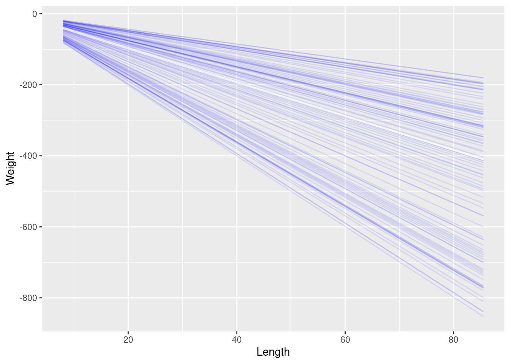
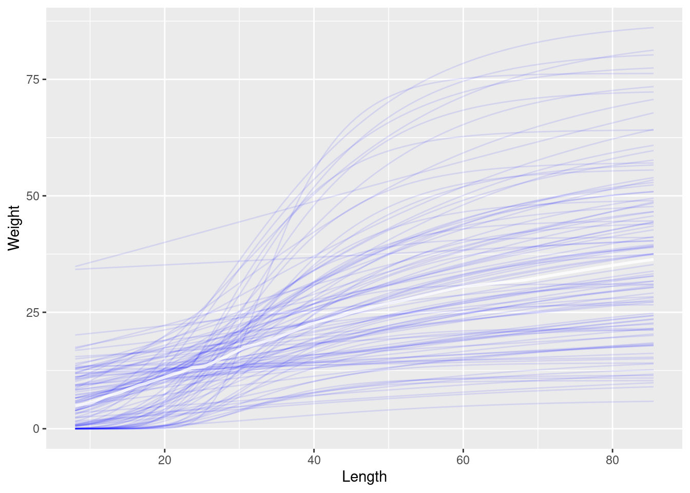
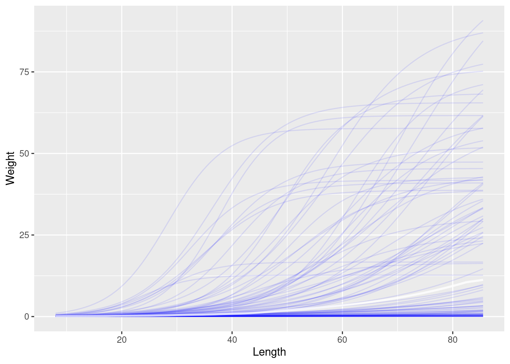
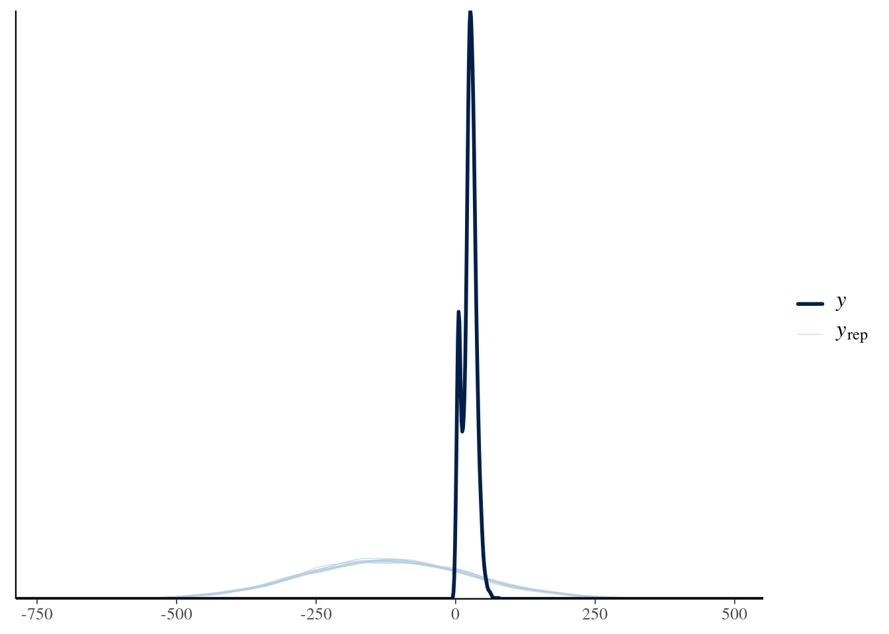
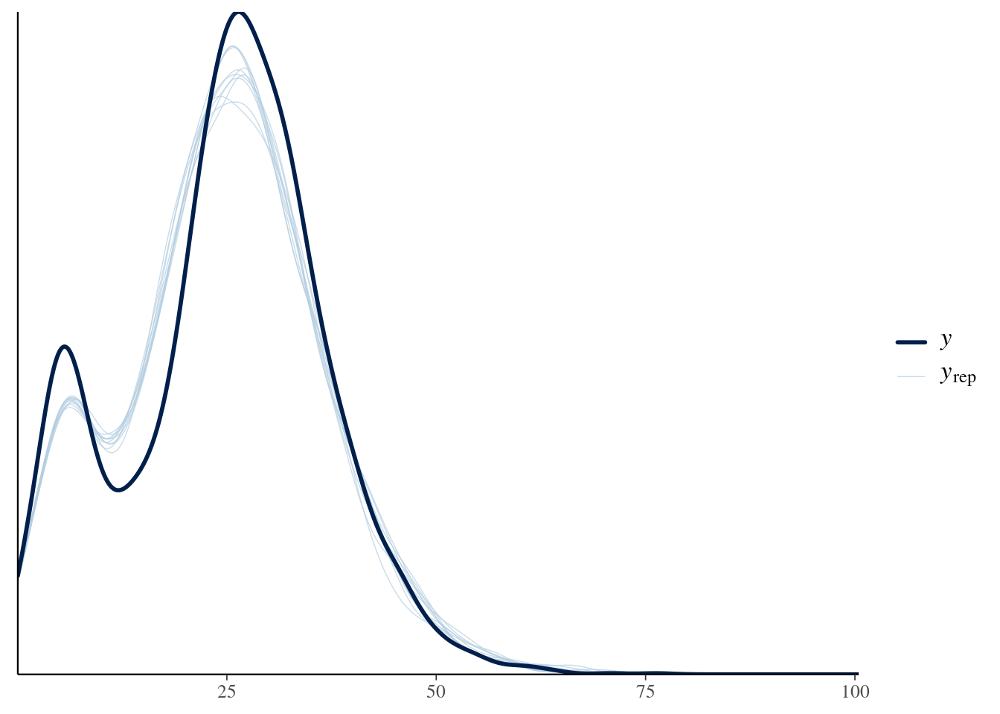
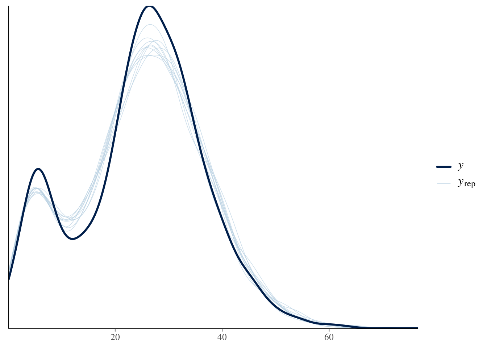
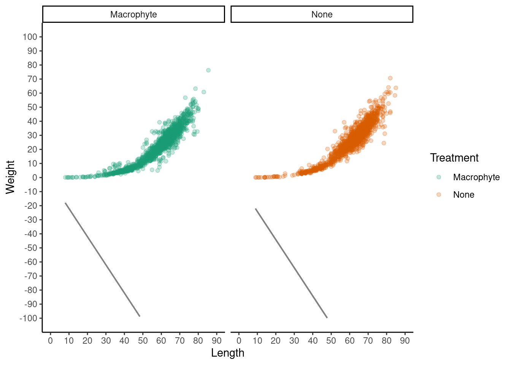
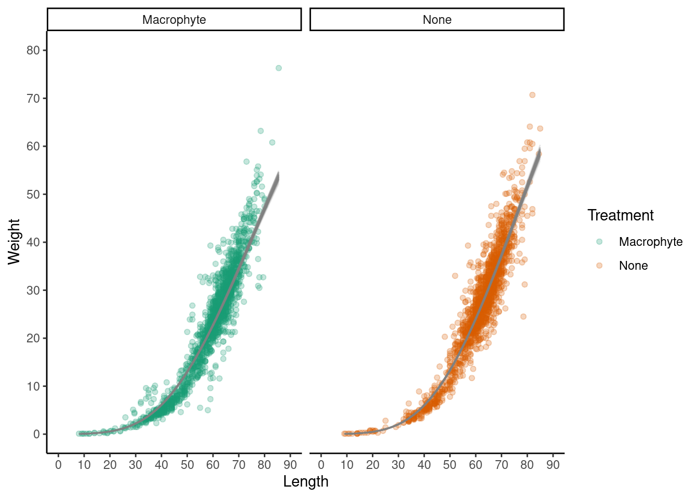
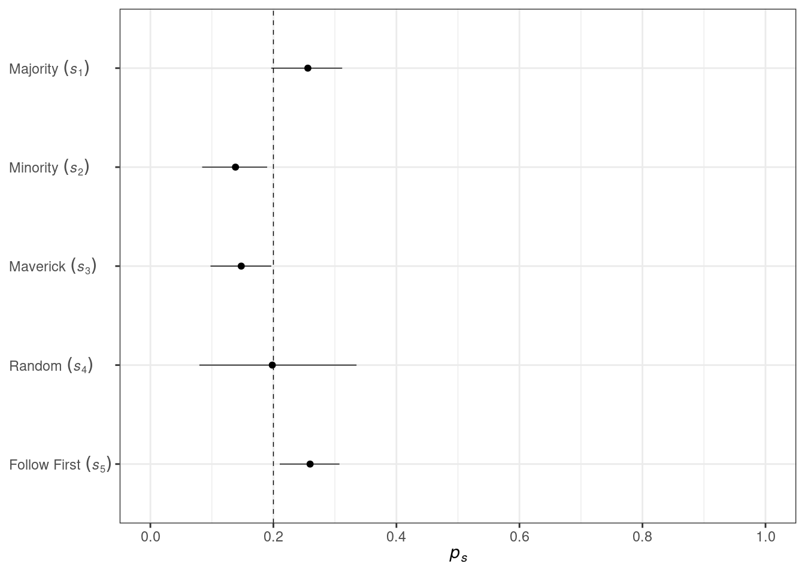

suppressWarnings(
suppressPackageStartupMessages({
library(rstan)
library(dplyr)
library(stringr)
library(readxl)
library(here)
library(janitor)
library(marginaleffects)
library(pins)
library(reshape2)
library(arrow)
library(cowplot)
library(modelr)
library(bnlearn)
library(future)
library(dagitty)
library(cmdstanr)
library(brms)
library(ggdag)
library(tidybayes)
library(ggtext)
library(ggplot2)
library(simDAG)
library(rethinking)
library(forcats)
})
)
bayesplot::color_scheme_set("blue")
options(mc.cores = 1) Generalised Linear Madness
Introduction
This analysis demonstrates science before statistics by incorporating prior knowledge in the modeling approach. Scientific phenomena are often modeled as linear relationships (i.e., generalized linear (mixed) models), which may not capture the data generating process.
Fitting non-linear models such as logarithmic, polynomial curves, or splines may give us a good prediction of relationships, but doesn’t allow us to estimate parameters of interest (e.g., maximum value or growth rate).
Data and Methods
During my PhD, I measured the length and weight of ~3000 freshwater mussels (yes I’m that exciting!). I want to describe the relationship between length and weight between mussels collected inside macrophyte beds (aquatic plant beds: treatment) vs not (control) based on how the data was generated.
Although the length-weight relationship isn’t technically a temporal relationship (even I’m not going to measure ~3000 mussels repeatedly over time), substituting time for space (length) will allow us to fit a models that estimate the: a) maximum weight; and b) growth rate.
To examine the relationship between the length and weight of freshwater mussels, generalized (non-)linear models were performed in R (R Core Team 2022) using the brms package (Bürkner, 2017). Linear, Gompertz (modified), and Logistic models were fitted with treatment (none vs macrophyte) as a predictor variable. A Gamma distribution was selected for the response since weight has positive and continuous values. Models were compared using leave-one-out cross validation and model validation was performed using prior and posterior predictive checks, as well as effective samples sizes and r-hats (McElreath, 2020).
Data
df <- readr::read_csv(here("pages/stan_workshop/data/Mussel_df_15.01.20.csv"), show_col_types = FALSE)
df <- df %>% dplyr::select(c(Length,Height,Width,Weight,Treatment,Macrophyte,Site))
df <- df[complete.cases(df),] # Select only complete cases
head(df)# A tibble: 6 × 7
Length Height Width Weight Treatment Macrophyte Site
<dbl> <dbl> <dbl> <dbl> <chr> <chr> <chr>
1 61 14 40 18.7 None None Keeleys_Landing
2 71 19.5 42.5 34 None None Keeleys_Landing
3 68 20 44.5 33.7 None None Keeleys_Landing
4 68.5 22.5 40 38.7 None None Keeleys_Landing
5 65.5 24.5 42 32.7 None None Keeleys_Landing
6 53 14.5 34 14 Macrophyte Hornwort Keeleys_Landingmod_formula <- bf(Weight ~ 0 + Intercept + Length + Treatment)
priors <- c(prior(class = b, coef = Intercept, normal(0,1)), # Intercept
prior(class = b, coef = TreatmentNone, normal(50,5)), # Difference between treatments
prior(class = b, normal(0,10), lb = -10, ub = -2) # Slope
)
# Priors
nl_mod_1_priors <- brm(mod_formula, family = Gamma(link = "identity"),
prior = priors,
sample_prior = "only", seed = 4,
data = df,
threads = threading(threads = NULL, grainsize = 1250, static = FALSE),
backend = "cmdstanr",
file = here("pages", "stan_workshop", "model", "NL_mod_1_priors_bad"),
silent = 0, refresh = 100,
chains = 4, cores = 4, warmup = 1000, iter = 2000)
conditional_effects(nl_mod_1_priors, effect = "Length", spaghetti = T, ndraws = 100)
mod_formula <- bf(Weight ~ k * exp( -exp( -(r * (Length - delay)))),
k + r + delay ~ 0 + Intercept + Treatment,
nl = TRUE)
priors <- c(prior(nlpar = "k", lb = 0, normal(50,20)), # Max Weight
prior(nlpar = "r", lb = 0, normal(0,0.05)), # Growth Rate
prior(nlpar = "delay", lb = 0, normal(30,2)) # Delay across the x-axis
)
# Priors
nl_mod_2_priors <- brm(mod_formula, family = Gamma(link = "identity"),
prior = priors,
sample_prior = "only", seed = 4,
data = df,
threads = threading(threads = NULL, grainsize = 1250, static = FALSE),
backend = "cmdstanr",
file = here("pages", "stan_workshop", "model", "NL_mod_2_priors_good"),
silent = 1, refresh = 100,
chains = 4, cores = 4, warmup = 1000, iter = 2000)
conditional_effects(nl_mod_2_priors, effect = "Length", spaghetti = T, ndraws = 100)
mod_formula <- bf(Weight ~ M / (1 + (M - mu0) / mu0 * exp( -b * Length)),
mu0 + b + M ~ 0 + Intercept + Treatment,
nl = TRUE)
priors <- c(prior(nlpar = "mu0", lb = 0, normal(0,0.1)), # Weight at length zero
prior(nlpar = "b", lb = 0, normal(0,0.1)), # Growth rate
prior(nlpar = "M", lb = 0, normal(50,20)) # Max Weight
)
# Priors
nl_mod_3_priors <- brm(mod_formula, family = Gamma(link = "identity"),
prior = priors,
sample_prior = "only", seed = 4,
data = df,
threads = threading(threads = NULL, grainsize = 1250, static = FALSE),
backend = "cmdstanr",
file = here("pages", "stan_workshop", "model", "NL_mod_3_priors_good"),
silent = 0, refresh = 100,
chains = 4, cores = 4, warmup = 1000, iter = 2000)
conditional_effects(nl_mod_3_priors, effect = "Length", spaghetti = T, ndraws = 100)
#| label: model_3
#| echo: true
fit_brm <- function(formula, model_name, priors) {
brm(formula,
family = Gamma(link = "identity"),
data = df,
prior = priors,
backend = "cmdstanr",
file = here("pages", "stan_workshop", "model", model_name),
threads = threading(3),
silent = 0,
refresh = 500,
chains = 4,
cores = 4,
warmup = 2000,
iter = 4000)
}
# Linear
mod_formula <- bf(Weight ~ 0 + Intercept + Length + Treatment) # Run with Gaussian family
priors <- c(prior(class = b, coef = Intercept, normal(0,1)), # Intercept
prior(class = b, coef = TreatmentNone, normal(50,5)), # Difference between treatments
prior(class = b, normal(0,10), lb = -10, ub = -2) # Slope
)
nl_mod_1 <- fit_brm(mod_formula, "NL_mod_1", priors)
# Gompertz
mod_formula <- bf(Weight ~ k * exp( -exp( -(r * (Length - delay)))),
k + r + delay ~ 0 + Intercept + Treatment,
nl = TRUE)
priors <- c(prior(nlpar = "k", lb = 0, normal(50,20)), # Max Weight
prior(nlpar = "r", lb = 0, normal(0,0.05)), # Growth Rate
prior(nlpar = "delay", lb = 0, normal(30,2)) # Delay across the x-axis
)
nl_mod_2 <- fit_brm(mod_formula, "NL_mod_2", priors)
# Logistic
mod_formula <- bf(Weight ~ M / (1 + (M - mu0) / mu0 * exp( -b * Length)),
mu0 + b + M ~ 0 + Intercept + Treatment,
nl = TRUE)
priors <- c(prior(nlpar = "mu0", lb = 0, normal(0,0.1)), # Weight at length zero
prior(nlpar = "b", lb = 0, normal(0,0.1)), # Growth rate
prior(nlpar = "M", lb = 0, normal(50,20)) # Max Weight
)
nl_mod_3 <- fit_brm(mod_formula, "NL_mod_3", priors)#| label: model-output_3
#| echo: false
#|
summary(nl_mod_1) Family: gaussian
Links: mu = identity; sigma = identity
Formula: Weight ~ 0 + Intercept + Length + Treatment
Data: df (Number of observations: 3040)
Draws: 4 chains, each with iter = 4000; warmup = 2000; thin = 1;
total post-warmup draws = 8000
Regression Coefficients:
Estimate Est.Error l-95% CI u-95% CI Rhat Bulk_ESS Tail_ESS
Intercept -2.05 0.05 -2.17 -2.00 1.00 5240 3222
Length -2.00 0.00 -2.00 -2.00 1.00 5657 3295
TreatmentNone -2.08 0.08 -2.30 -2.00 1.00 5786 3655
Further Distributional Parameters:
Estimate Est.Error l-95% CI u-95% CI Rhat Bulk_ESS Tail_ESS
sigma 150.56 1.93 146.89 154.35 1.00 8264 5326
Draws were sampled using sample(hmc). For each parameter, Bulk_ESS
and Tail_ESS are effective sample size measures, and Rhat is the potential
scale reduction factor on split chains (at convergence, Rhat = 1).summary(nl_mod_2) Family: gamma
Links: mu = identity; shape = identity
Formula: Weight ~ k * exp(-exp(-(r * (Length - delay))))
k ~ 0 + Intercept + Treatment
r ~ 0 + Intercept + Treatment
delay ~ 0 + Intercept + Treatment
Data: df (Number of observations: 3040)
Draws: 4 chains, each with iter = 4000; warmup = 2000; thin = 1;
total post-warmup draws = 8000
Regression Coefficients:
Estimate Est.Error l-95% CI u-95% CI Rhat Bulk_ESS Tail_ESS
k_Intercept 114.56 3.13 108.51 120.82 1.00 3019 3777
k_TreatmentNone 18.14 2.18 13.89 22.55 1.00 3354 3439
r_Intercept 0.03 0.00 0.03 0.03 1.00 2969 3562
r_TreatmentNone 0.00 0.00 0.00 0.00 1.00 3540 2543
delay_Intercept 76.22 0.73 74.80 77.66 1.00 2930 3645
delay_TreatmentNone 1.81 0.29 1.22 2.35 1.00 3479 3328
Further Distributional Parameters:
Estimate Est.Error l-95% CI u-95% CI Rhat Bulk_ESS Tail_ESS
shape 28.61 0.76 27.12 30.13 1.00 5630 4339
Draws were sampled using sample(hmc). For each parameter, Bulk_ESS
and Tail_ESS are effective sample size measures, and Rhat is the potential
scale reduction factor on split chains (at convergence, Rhat = 1).summary(nl_mod_3) Family: gamma
Links: mu = identity; shape = identity
Formula: Weight ~ M/(1 + (M - mu0)/mu0 * exp(-b * Length))
mu0 ~ 0 + Intercept + Treatment
b ~ 0 + Intercept + Treatment
M ~ 0 + Intercept + Treatment
Data: df (Number of observations: 3040)
Draws: 4 chains, each with iter = 4000; warmup = 2000; thin = 1;
total post-warmup draws = 8000
Regression Coefficients:
Estimate Est.Error l-95% CI u-95% CI Rhat Bulk_ESS Tail_ESS
mu0_Intercept 0.09 0.00 0.08 0.10 1.00 3079 3868
mu0_TreatmentNone 0.00 0.00 0.00 0.00 1.00 3748 2257
b_Intercept 0.10 0.00 0.10 0.11 1.00 2830 3600
b_TreatmentNone 0.00 0.00 0.00 0.00 1.00 3169 2882
M_Intercept 48.41 0.91 46.70 50.26 1.00 2937 4018
M_TreatmentNone 3.18 0.90 1.34 4.86 1.00 3695 2615
Further Distributional Parameters:
Estimate Est.Error l-95% CI u-95% CI Rhat Bulk_ESS Tail_ESS
shape 26.07 0.65 24.83 27.36 1.00 6067 5443
Draws were sampled using sample(hmc). For each parameter, Bulk_ESS
and Tail_ESS are effective sample size measures, and Rhat is the potential
scale reduction factor on split chains (at convergence, Rhat = 1).#| label: validation_3
#| echo: false
#| message: false
#| fig-show: hold
#| results: false
#| layout-ncol: 2
#| fig.width: 4
#| fig.height: 2
pp_check(nl_mod_1)
pp_check(nl_mod_2)
pp_check(nl_mod_3)
df %>%
group_by(Treatment) %>%
data_grid(Length = seq_range(Length, n = 101)) %>%
add_epred_draws(nl_mod_1, ndraws = 100) %>%
ggplot(aes(x = Length, y = Weight, color = Treatment)) +
theme_classic() +
geom_point(data = df, alpha = 0.25) +
geom_line(aes(y = .epred, group = paste(Treatment, .draw)), alpha = .1, color = "grey50") +
scale_x_continuous(limits = c(0,90), breaks = seq(0,90,10)) +
scale_y_continuous(limits = c(-100,100), breaks = seq(-100,100,10)) +
facet_wrap(~Treatment) +
scale_color_brewer(palette = "Dark2")
df %>%
group_by(Treatment) %>%
data_grid(Length = seq_range(Length, n = 101)) %>%
add_epred_draws(nl_mod_2, ndraws = 100) %>%
ggplot(aes(x = Length, y = Weight, color = Treatment)) +
theme_classic() +
geom_point(data = df, alpha = 0.25) +
geom_line(aes(y = .epred, group = paste(Treatment, .draw)), alpha = .1, color = "grey50") +
scale_x_continuous(limits = c(0,90), breaks = seq(0,90,10)) +
scale_y_continuous(limits = c(0,80), breaks = seq(0,80,10)) +
facet_wrap(~Treatment) +
scale_color_brewer(palette = "Dark2")
df %>%
group_by(Treatment) %>%
data_grid(Length = seq_range(Length, n = 101)) %>%
add_epred_draws(nl_mod_3, ndraws = 100) %>%
ggplot(aes(x = Length, y = Weight, color = Treatment)) +
theme_classic() +
geom_point(data = df, alpha = 0.25) +
geom_line(aes(y = .epred, group = paste(Treatment, .draw)), alpha = .1, color = "grey50") +
scale_x_continuous(limits = c(0,90), breaks = seq(0,90,10)) +
scale_y_continuous(limits = c(0,80), breaks = seq(0,80,10)) +
facet_wrap(~Treatment) +
scale_color_brewer(palette = "Dark2")loo(nl_mod_1, nl_mod_2, nl_mod_3)Output of model 'nl_mod_1':
Computed from 8000 by 3040 log-likelihood matrix.
Estimate SE
elpd_loo -19559.0 11.2
p_loo 0.1 0.0
looic 39117.9 22.5
------
MCSE of elpd_loo is 0.0.
MCSE and ESS estimates assume MCMC draws (r_eff in [0.8, 1.0]).
All Pareto k estimates are good (k < 0.7).
See help('pareto-k-diagnostic') for details.
Output of model 'nl_mod_2':
Computed from 8000 by 3040 log-likelihood matrix.
Estimate SE
elpd_loo -8320.0 76.5
p_loo 16.0 2.3
looic 16640.0 153.0
------
MCSE of elpd_loo is 0.1.
MCSE and ESS estimates assume MCMC draws (r_eff in [0.4, 1.0]).
All Pareto k estimates are good (k < 0.7).
See help('pareto-k-diagnostic') for details.
Output of model 'nl_mod_3':
Computed from 8000 by 3040 log-likelihood matrix.
Estimate SE
elpd_loo -8461.3 89.8
p_loo 16.6 2.2
looic 16922.6 179.6
------
MCSE of elpd_loo is 0.1.
MCSE and ESS estimates assume MCMC draws (r_eff in [0.4, 1.0]).
All Pareto k estimates are good (k < 0.7).
See help('pareto-k-diagnostic') for details.
Model comparisons:
elpd_diff se_diff
nl_mod_2 0.0 0.0
nl_mod_3 -141.3 48.3
nl_mod_1 -11238.9 74.1#| label: stan_3
#| echo: false
mod_formula <- bf(Weight ~ k * exp( -exp( -(r * (Length - delay)))),
k + r + delay ~ 0 + Intercept + Treatment,
nl = TRUE)
priors <- c(prior(nlpar = "k", lb = 0, normal(50,20)), # Max Weight
prior(nlpar = "r", lb = 0, normal(0,0.05)), # Growth Rate
prior(nlpar = "delay", lb = 0, normal(30,2)) # Delay across the x-axis
)
make_stancode(
formula = mod_formula,
data = df,
prior = priors,
family = Gamma(link = "identity")
)// generated with brms 2.22.0
functions {
}
data {
int<lower=1> N; // total number of observations
vector[N] Y; // response variable
int<lower=1> K_k; // number of population-level effects
matrix[N, K_k] X_k; // population-level design matrix
int<lower=1> K_r; // number of population-level effects
matrix[N, K_r] X_r; // population-level design matrix
int<lower=1> K_delay; // number of population-level effects
matrix[N, K_delay] X_delay; // population-level design matrix
// covariates for non-linear functions
vector[N] C_1;
int prior_only; // should the likelihood be ignored?
}
transformed data {
}
parameters {
vector<lower=0>[K_k] b_k; // regression coefficients
vector<lower=0>[K_r] b_r; // regression coefficients
vector<lower=0>[K_delay] b_delay; // regression coefficients
real<lower=0> shape; // shape parameter
}
transformed parameters {
real lprior = 0; // prior contributions to the log posterior
lprior += normal_lpdf(b_k | 50, 20)
- 2 * normal_lccdf(0 | 50, 20);
lprior += normal_lpdf(b_r | 0, 0.05)
- 2 * normal_lccdf(0 | 0, 0.05);
lprior += normal_lpdf(b_delay | 30, 2)
- 2 * normal_lccdf(0 | 30, 2);
lprior += gamma_lpdf(shape | 0.01, 0.01);
}
model {
// likelihood including constants
if (!prior_only) {
// initialize linear predictor term
vector[N] nlp_k = rep_vector(0.0, N);
// initialize linear predictor term
vector[N] nlp_r = rep_vector(0.0, N);
// initialize linear predictor term
vector[N] nlp_delay = rep_vector(0.0, N);
// initialize non-linear predictor term
vector[N] mu;
nlp_k += X_k * b_k;
nlp_r += X_r * b_r;
nlp_delay += X_delay * b_delay;
for (n in 1:N) {
// compute non-linear predictor values
mu[n] = (nlp_k[n] * exp( - exp( - (nlp_r[n] * (C_1[n] - nlp_delay[n])))));
}
target += gamma_lpdf(Y | shape, shape ./ mu);
}
// priors including constants
target += lprior;
}
generated quantities {
}Conclusion
Models can be used to estimate parameters of interest that better capture data generating process based on ecological theory.
Prior information can be useful in constraining models to realistic estimates.
Here the Gompertz and logistic models estimated the growth rate to be 0.03 and 0.10 and maximum weight to be 115 (g) and 50.0 (g), respectively.
Food for thought:
Which model is the best at capturing the data generating process?
Could ecological theory informed techniques be applied to your own research?
Beyond brms: in space
This section demonstrates the use of Stan to fit a choice model based on the hidden minds and observed behavior data example from McElreath (2020). The model estimates the probability of choosing a particular option based on the majority and minority choices, as well as the maverick and random choices.
The five stratergies are:
- Follow the Majority: Copy the majority demonstrated color.
- Follow the Minority: Copy the minority demonstrated color.
- Maverick: Choose the color that no demonstrator chose.
- Random: Choose a color at random, ignoring the demonstrators.
- Follow First: Copy the color that was demonstrated first. This was either the majority color (when majority_first equals 1) or the minority color (when 0). (p. 533)
#| echo: false
#| results: asis
cat(readLines(here("pages", "stan_workshop", "stan", "choice_model_1.stan")), sep = "\n")
data{
int N;
int y[N];
int majority_first[N];
}
parameters{
simplex[5] p;
}
model{
vector[5] phi;
// prior
p ~ dirichlet( rep_vector(4,5) );
// probability of data
for ( i in 1:N ) {
if ( y[i]==2 ) phi[1]=1; else phi[1]=0; // majority
if ( y[i]==3 ) phi[2]=1; else phi[2]=0; // minority
if ( y[i]==1 ) phi[3]=1; else phi[3]=0; // maverick
phi[4]=1.0/3.0; // random
if ( majority_first[i]==1 ) // follow first
if ( y[i]==2 ) phi[5]=1; else phi[5]=0;
else
if ( y[i]==3 ) phi[5]=1; else phi[5]=0;
// compute log( p_s * Pr(y_i|s )
for ( j in 1:5 ) phi[j] = log(p[j]) + log(phi[j]);
// compute average log-probability of y_i
target += log_sum_exp( phi );
}
}#| label: model_output_3
print(choice_mod_1, pars = c("p"), digits = 3)Inference for Stan model: anon_model.
3 chains, each with iter=2000; warmup=1000; thin=1;
post-warmup draws per chain=1000, total post-warmup draws=3000.
mean se_mean sd 2.5% 25% 50% 75% 97.5% n_eff Rhat
p[1] 0.256 0.001 0.036 0.183 0.233 0.257 0.280 0.325 768 1.000
p[2] 0.138 0.001 0.033 0.074 0.116 0.138 0.161 0.200 883 1.000
p[3] 0.148 0.001 0.031 0.087 0.126 0.149 0.170 0.207 892 1.000
p[4] 0.198 0.003 0.081 0.063 0.139 0.191 0.252 0.371 650 1.001
p[5] 0.260 0.001 0.031 0.196 0.238 0.260 0.281 0.319 2728 1.000
Samples were drawn using NUTS(diag_e) at Mon Oct 6 23:54:56 2025.
For each parameter, n_eff is a crude measure of effective sample size,
and Rhat is the potential scale reduction factor on split chains (at
convergence, Rhat=1).#| label: plot_3
#| fig.height: 3
label <- c("Majority~(italic(s)[1])",
"Minority~(italic(s)[2])",
"Maverick~(italic(s)[3])",
"Random~(italic(s)[4])",
"Follow~First~(italic(s)[5])")
rethinking::precis(choice_mod_1, depth = 2) %>%
data.frame() %>%
mutate(name = factor(label, levels = label)) %>%
mutate(name = fct_rev(name)) %>%
ggplot(aes(x = mean, xmin = X5.5., xmax = X94.5., y = name)) +
theme_bw() +
geom_vline(xintercept = .2, linewidth = 1/4, linetype = 2) +
geom_pointrange(linewidth = 1/4, fatten = 6/4) +
scale_x_continuous(expression(italic(p[s])), limits = c(0, 1),
breaks = 0:5 / 5) +
scale_y_discrete(NULL, labels = ggplot2:::parse_safe) +
theme(axis.text.y = element_text(hjust = 0))
References
McElreath, R. (2020). Statistical rethinking: A Bayesian course with examples in R and Stan. Chapman and Hall/CRC.
R Core Team (2022). R: A language and environment for statistical computing. R Foundation for Statistical Computing, Vienna, Austria. https://www.R-project.org/
Session Information
#| label: session-info
utils::sessionInfo()R version 4.5.0 (2025-04-11)
Platform: x86_64-pc-linux-gnu
Running under: Ubuntu 20.04.6 LTS
Matrix products: default
BLAS: /usr/lib/x86_64-linux-gnu/blas/libblas.so.3.9.0
LAPACK: /usr/lib/x86_64-linux-gnu/lapack/liblapack.so.3.9.0 LAPACK version 3.9.0
locale:
[1] LC_CTYPE=C.UTF-8 LC_NUMERIC=C LC_TIME=C.UTF-8
[4] LC_COLLATE=C.UTF-8 LC_MONETARY=C.UTF-8 LC_MESSAGES=C.UTF-8
[7] LC_PAPER=C.UTF-8 LC_NAME=C LC_ADDRESS=C
[10] LC_TELEPHONE=C LC_MEASUREMENT=C.UTF-8 LC_IDENTIFICATION=C
time zone: Pacific/Auckland
tzcode source: system (glibc)
attached base packages:
[1] parallel stats graphics grDevices datasets utils methods
[8] base
other attached packages:
[1] forcats_1.0.0 rethinking_2.42 posterior_1.6.1
[4] simDAG_0.4.0 ggplot2_3.5.2 ggtext_0.1.2
[7] tidybayes_3.0.7 ggdag_0.2.13 brms_2.22.0
[10] Rcpp_1.0.14 cmdstanr_0.9.0.9000 dagitty_0.3-4
[13] future_1.49.0 bnlearn_5.1 modelr_0.1.11
[16] cowplot_1.2.0 arrow_21.0.0.1 reshape2_1.4.4
[19] pins_1.4.1 marginaleffects_0.30.0 janitor_2.2.1
[22] here_1.0.1 readxl_1.4.5 stringr_1.5.1
[25] dplyr_1.1.4 rstan_2.32.7 StanHeaders_2.32.10
loaded via a namespace (and not attached):
[1] gridExtra_2.3 inline_0.3.21 rlang_1.1.6
[4] magrittr_2.0.3 snakecase_0.11.1 matrixStats_1.5.0
[7] compiler_4.5.0 loo_2.8.0 callr_3.7.6
[10] vctrs_0.6.5 shape_1.4.6.1 pkgconfig_2.0.3
[13] arrayhelpers_1.1-0 fastmap_1.2.0 backports_1.5.0
[16] labeling_0.4.3 rmarkdown_2.30 ps_1.9.1
[19] purrr_1.0.4 bit_4.6.0 xfun_0.52
[22] jsonlite_2.0.0 broom_1.0.10 R6_2.6.1
[25] stringi_1.8.7 RColorBrewer_1.1-3 parallelly_1.44.0
[28] boot_1.3-31 lubridate_1.9.4 cellranger_1.1.0
[31] assertthat_0.2.1 knitr_1.50 bayesplot_1.12.0
[34] Matrix_1.6-5 igraph_2.1.4 timechange_0.3.0
[37] tidyselect_1.2.1 rstudioapi_0.17.1 abind_1.4-8
[40] yaml_2.3.10 codetools_0.2-20 curl_6.2.2
[43] processx_3.8.6 listenv_0.9.1 pkgbuild_1.4.7
[46] lattice_0.22-7 tibble_3.2.1 plyr_1.8.9
[49] withr_3.0.2 bridgesampling_1.1-2 coda_0.19-4.1
[52] evaluate_1.0.3 RcppParallel_5.1.11-1 xml2_1.3.8
[55] ggdist_3.3.3 pillar_1.10.2 tensorA_0.36.2.1
[58] checkmate_2.3.3 renv_1.0.7 stats4_4.5.0
[61] distributional_0.5.0 generics_0.1.4 rprojroot_2.0.4
[64] rstantools_2.5.0 scales_1.4.0 globals_0.18.0
[67] glue_1.8.0 tools_4.5.0 data.table_1.17.2
[70] mvtnorm_1.3-3 tidygraph_1.3.1 grid_4.5.0
[73] tidyr_1.3.1 QuickJSR_1.8.1 nlme_3.1-168
[76] cli_3.6.5 svUnit_1.0.8 Brobdingnag_1.2-9
[79] V8_8.0.0 gtable_0.3.6 digest_0.6.37
[82] htmlwidgets_1.6.4 farver_2.1.2 htmltools_0.5.8.1
[85] lifecycle_1.0.4 gridtext_0.1.5 bit64_4.6.0-1
[88] MASS_7.3-60.0.1